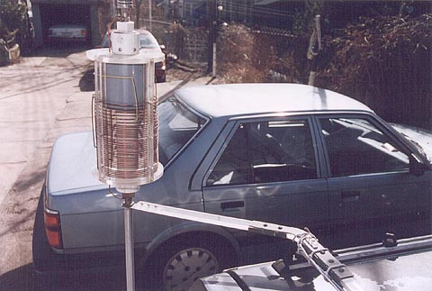

Here you have a view showing the roof support. There's a few details here worth mentioning. The brass reinforcment was
added after the first all Lexan unit broke. Not because is lacked strength, but because I shouldn't have been hitting
trees with it while hunting. So the easy fix was to make an interdigitated sandwich of brass and insert a straight
replacement piece.
Note the small block of Lexan next to the bend on top of the support. This is matched by another block underneath.
These blocks fit into the channel of the roof rack and enable me to place this support on either side of the vehicle
where an identical lower bracket now supports my 11m whip (seefirst frame).
This is an incredibly resilient mounting. It's withstood 90mph driving and lots of rough terrain. It provides just
enough flex to resist breaking while being rigid enough to prevent any detuning from movement.
Next frame